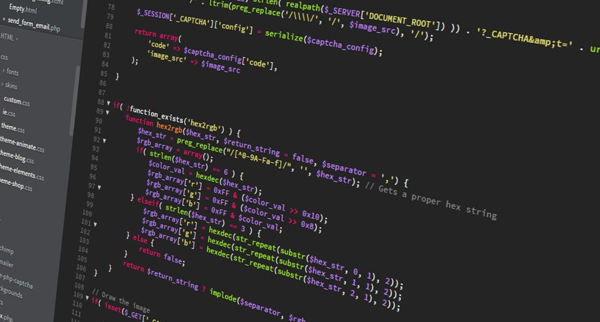
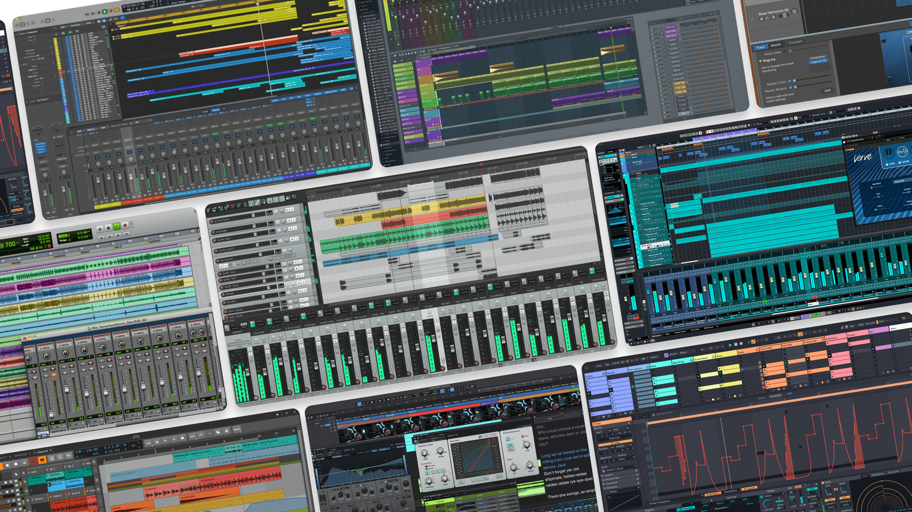
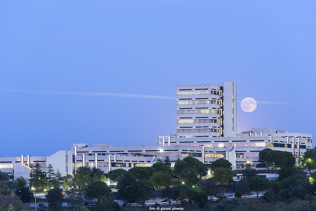

Chi sono?
Mi chiamo Angelo Paonne e sono uno studente del quinto anno dell'IIS Marconi
Pieralisi, indirizzo Informatica. Sono nato a Jesi ma, attualmente, abito a Chiaravalle.
Ho scelto di frequentare il corso di informatica sia per una scelta pratica che per le mie passioni. Gia alle scuole medie ero
consapevole di quanto la tecnologia fosse in continua evoluzione. Inoltre avevo già sperimentato con la programmazione varie volte e mi
ero reso conto che l'informatica sarebbe stata piacevole da imparare.

Percorso di studi
Il mio percorso di studi presso l'ITIS indirizzo Informatica è stato
caratterizzato da un approccio sia pratico che teorico alla disciplina.
Quello che veramente mi ha sorpreso è quanto sia stato importante l'approccio laboratoriale per
comprendere effettivamente le nozioni imparate durante le ore di teoria, spesso toccare con mano gli
argomenti trattati mi ha permesso di chiarire dubbi o fraintendimenti che forse non avrei potuto
neanche identificare.
Competenze informatiche
Nel corso degli anni ho sviluppato competenze di base e intermedie in diversi ambiti dell'informatica, tra cui:
- Programmazione in C, C#, Assembly, Python, Java, HTML, CSS, JavaScript, PHP
- Sviluppo web lato client e server e utilizzo di bootstrap
- Gestione di database e utilizzo di MySQL
- Reti e sistemi, con conoscenze di base su architetture di rete e protocolli

Capacità personali
Durante il mio percorso scolastico ho sviluppato capacità legate allo studio
tecnico e alla mia capacità di relazionarmi con gli altri.
Tra tutte le competenze sviluppate, ritengo che l'informatica mi abbia dato la possibilità di
sviluppare un modo di pensare e affrontare un problema: dividere un problema più grande in piccoli
sottoproblemi più semplici da risolvere.
Questo mindset non è solo utile nel campo informatico, ma nella vita di tutti i giorni aiuta a
trovare una soluzione semplice a problemi che sembrano troppo grandi o fuori dal mio controllo.
Interessi e passioni
Come molti studenti di questo indirizzo, sono appassionato di gaming, un modo di
passare il tempo e socializzare.
Sono anche un produttore di musica elettronica: attraverso la produzione e il sound design ho
scoperto modi di esprimermi difficilmente comparabili ad altre forme d'arte.
In particolare mi sto inserendo nelle scene del Drum And Bass e del Breakcore.


Obiettivi futuri
Dopo il diploma intendo proseguire gli studi all'università di Ancona, dove ho intenzione di studiare ingegneria informatica e dell'automazione.